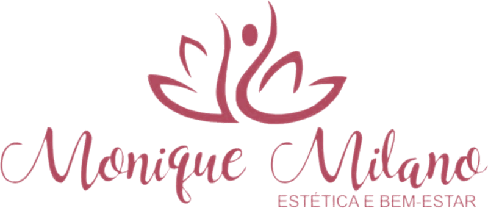
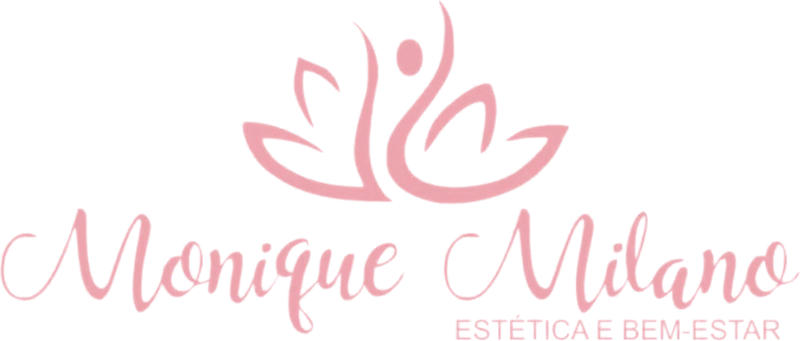

Estética facial e corporal · Terapias holísticas · Criciúma
Estética e bem-estar com o cuidado de quem é enfermeira há 10 anos.
Do rosto ao corpo, com hora marcada e atenção só para você. Cuidando do corpo e da alma.
Agendar pelo WhatsApp Não sabe por onde começar?Tratamentos
Para o rosto, para o corpo e para desacelerar.
Procura outro cuidado? Pergunte no WhatsApp.
O que você quer cuidar?
Escolha um ou mais. A Monique confirma o melhor caminho na conversa.
Quem cuida de você
Monique Milano
Enfermeira há 10 anos, a Monique levou para a estética o olhar de quem vem da saúde.
Ela junta os tratamentos faciais e corporais às terapias holísticas, porque cuidar da aparência e cuidar de como você se sente andam juntos. É ela quem conversa com você, indica o tratamento e faz o atendimento do começo ao fim.
- Formação
- Enfermagem
- Na saúde há
- 10 anos
- Atende em
- Criciúma, SC
Como funciona
- 1
Conversa no WhatsApp
Você conta o que quer cuidar e combina o melhor dia e horário.
- 2
Avaliação no atendimento
A Monique entende a sua pele, o seu corpo e a sua rotina antes de começar.
- 3
Acompanhamento
Nos tratamentos em sessões, o plano vai sendo ajustado conforme a sua resposta.
Quem já passou por aqui conta como foi.
Os feedbacks das clientes, os resultados e o dia a dia dos atendimentos estão nos destaques do Instagram.
Ver no @momilano.esteticaDúvidas
Onde é o atendimento?
No Hair Spa Eduarda Marques, em Criciúma. Ao agendar, a Monique te passa o endereço e como chegar.
Como faço para agendar?
Pelo WhatsApp (48) 99959-2658. Toque em "Agendar" em qualquer parte do site e a mensagem já vai escrita.
Não sei qual tratamento escolher. E agora?
Use o "O que você quer cuidar?" mais acima ou só conte no WhatsApp o que te incomoda. A indicação é feita na avaliação.
Em quanto tempo vejo resultado?
Depende do tratamento e de como o seu corpo responde. Alguns cuidados são de uma sessão, outros funcionam em pacote. O resultado varia de pessoa para pessoa.
Agende seu horário
- Onde
- Hair Spa Eduarda Marques
Criciúma, SC - Atendimento
- Com hora marcada
- (48) 99959-2658
- @momilano.estetica
